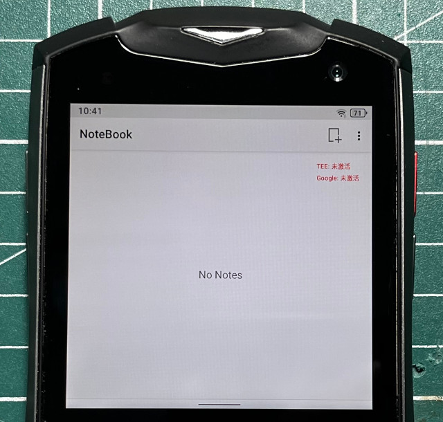

參考資訊：
https://github.com/topjohnwu/Magisk
https://github.com/Magisk-Modules-Repo/MagiskHidePropsConf
https://www.reddit.com/r/unihertz/comments/znx7k3/does_anyone_have_the_snwriter_file_for_the_titan/
https://xdaforums.com/t/module-deprecated-magiskhide-props-config-safetynet-prop-edits-and-more-v6-1-2.3789228/
在刷機時，如果選擇Format All，則開機會出現TEE:未激活、Google:未激活文字

Titan_pocket:/ $ su
Titan_pocket:/ # props
Loading... Please wait.
MagiskHide Props Config v6.1.2
by Didgeridoohan @ XDA Developers
=====================================
Updating fingerprints list
=====================================
Checking list version.
Fingerprints list up-to-date.
Checking for module update.
No update available.
MagiskHide Props Config v6.1.2
by Didgeridoohan @ XDA Developers
=====================================
Select an option below.
=====================================
1 - Edit device fingerprint
2 - Force BASIC key attestation
3 - Device simulation (disabled)
4 - Edit MagiskHide props (active)
5 - Add/edit custom props
6 - Delete prop values
7 - Script settings
8 - Collect logs
u - Perform module update check
r - Reset all options/settings
b - Reboot device
e - Exit
See the module readme or the
support thread @ XDA for details.
Enter your desired option: 6
MagiskHide Props Config v6.1.2
by Didgeridoohan @ XDA Developers
=====================================
Delete props
Select an option below:
=====================================
Delete prop values on your device.
Currently no props set for removal.
Please add one by selecting
"New prop" below.
n - New prop
b - Go back to main menu
e - Exit
See the module readme or the
support thread @ XDA for details.
Enter your desired option: n
MagiskHide Props Config v6.1.2
by Didgeridoohan @ XDA Developers
=====================================
New prop
=====================================
Enter the prop to delete. Example:
ro.sf.lcd_density
b - Go back
e - Exit
Enter your desired option: ro.agui_tee
MagiskHide Props Config v6.1.2
by Didgeridoohan @ XDA Developers
=====================================
ro.agui_tee
=====================================
The current value is:
TRUSTKERNEL
This will delete
ro.agui_tee
from your system.
Do you want to continue?
Enter y(es), n(o) or e(xit): y
Working. Please wait...
Working. Please wait...
Working. Please wait...
MagiskHide Props Config v6.1.2
by Didgeridoohan @ XDA Developers
=====================================
Reboot - Delete ro.agui_tee
=====================================
Reboot for changes to take effect.
Do you want to reboot now (y/n)?
Enter y(es), n(o) or e(xit): y
Rebooting...